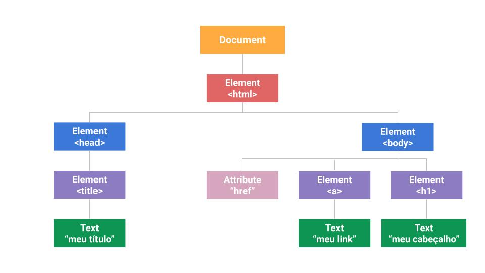

Um protocolo é uma forma de comunicação entre computadores através da rede
Protocolos:
Cada arquivo que é carregado no navegador tem uma URL
A URL (Uniform Resouce Locator) pode ser dividida em 3 partes:
Por exemplo: https://horadecodar.com.br/index.html
HTTPS é o protocolo, horadecodar.com.br é o domínio, que referencia um servidor (DNS > IP) e, index.htm o arquivo/página que estamos acessando
DOM (Document Object Model) é uma representação fiel do HTML da página
Ele é utilizado para acessar o HMTL através do JS, acessamos os elementos/tags
Através dele também podemos atrelas eventos ao HTML, como click ou pressionar teclas do mouse
